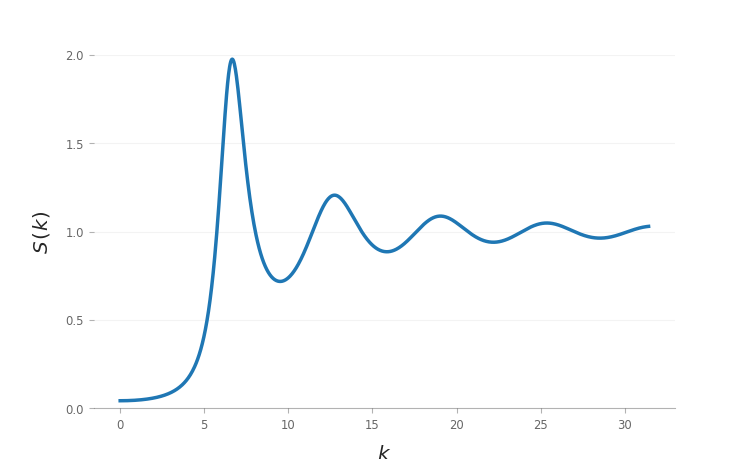

LiquidsStrucure.jl
This library intended to provide a mean to compute the structure factor of a variety of model liquids with different interaction potentials and under different approximation schemes (e.g. Percus–Yevick closure for the Ornstein–Zernike relation for a hard-sphere liquid) in the Julia programming language.
Status
So far, this library provides routines to calculate the structure factor of:
- hard spheres under the Percus–Yevick approximation for the Ornstein–Zernike (OZ) equation,
- hard spheres under the Percus–Yevick closure with Verlet–Weis corrections,
- hard disks under the Rosenfeld FMT approximation,
- dipolar hard spheres under the MSA approximation.
- attractive hard spheres under the Sharma-Sharma approximation.
TODO
- [ ] Add more interaction potentials and approximation schemes
Installation
LiquidsStructure.jl should work on Julia 1.0 and later versions and can be installed from a Julia session by running
julia> ] add https://github.com/LANIMFE/LiquidsStructure.jl.gitUsage
Once installed, run
using LiquidsStructureThe structure factor can be calculated by constructing a StructureFactor(::Liquid, ::ApproximationScheme) object S, and then using S as a function over the wavevector k (S(k)).
As an example, let us plot the structure factor for a hard spheres liquid with a volume fraction η = 0.4, under the Verlet–Weis approximation scheme
julia> using LiquidsStructure
julia> using Plots
julia> η = 0.4;
julia> S = StructureFactor(HardSpheres(η), VerletWeis);
julia> plot(S, range(0, stop = 10π, length = 1024), label = "S(k)")
Acknowledgements
This project was developed with support from CONACYT through the Laboratorio Nacional de Ingeniería de la Materia Fuera de Equilibrio (LANIMFE).